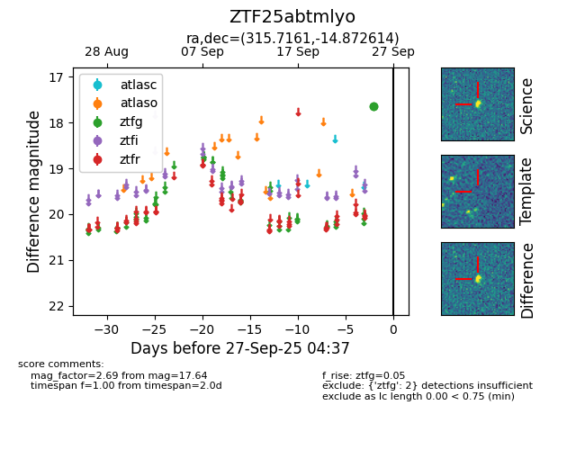

FINK: ZTF25abtmlyo
Lasair: ZTF25abtmlyo
ALeRCE: ZTF25abtmlyo
ZTF25abtmlyo (ztf,fink)
equatorial (ra, dec) = (315.7161,-14.87261)
galactic (l, b) = (33.6847,-35.71227)

last ztfg=17.64
2 ztfg detections